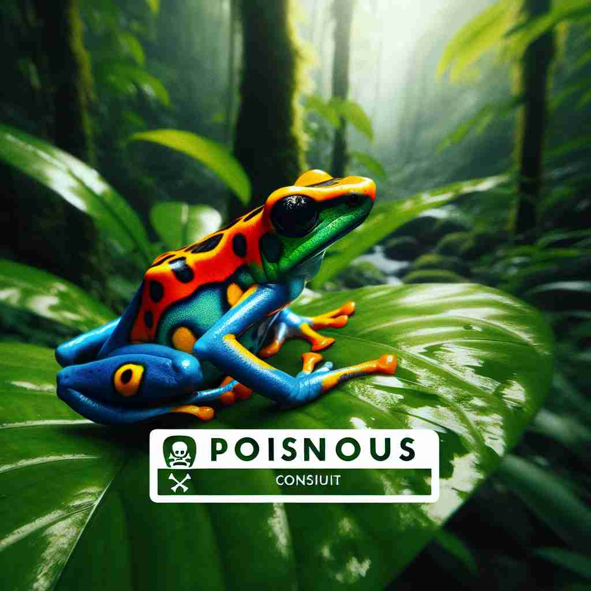

💬 The bottle contains a poisonous substance that can harm you.

💬 The poisonous frog is very colorful but can be harmful.
🔈 ['pɒɪzənəs]
🗝️ adj. containing or producing a substance that can kill or harm if taken into the body
🖼️ 在一片茂密的森林中，一名冒险者发现了一朵色彩斑斓的蘑菇。他正准备摘下，旁边的向导急忙制止他说：“小心！这个蘑菇是poisonous的，吃了会对身体产生严重伤害。”这个场景揭示了'poisonous'指包含或产生有害物质的含义。
🔍 记住'poisonous'的核心含义是'有毒的'，就像某些物质进入身体会造成伤害。从这个核心意义出发，可以联想到人际关系、态度或行为也可能像毒药一样有害。这种比喻性的延伸使得'poisonous'可以用来描述极其不愉快、恶毒或有害的情况。
💬 The bottle contains a poisonous substance that can harm you.
💬 The poisonous frog is very colorful but can be harmful.
🌳 由名词 'poison'（毒药）加上形容词后缀 '-ous' 组成，构成一个形容词，表示 '有毒的'。
💡 记忆 'poisonous' 时，可以将其与 'poison' 联系起来，联想为 '像毒药一样的'，即具有毒性。后缀 '-ous' 通常表明性质，如 'dangerous'（危险的），帮助记忆它是一个形容词。
🗝️ adj. extremely unpleasant or harmful
🖼️ 在一个社交聚会中，人们正在讨论一部新电影。有一位评论家面露苦涩地说：“我觉得那部电影中的情节 naprawdę是poisonous，令人感到不适。”这展示了'poisonous'用来形容极其不愉快或有害的事物。
💬 The two colleagues had a poisonous relationship.
❓ 比喻性用法，像毒药一样有害
🗝️ adj. very malicious or spiteful
🖼️ 在一个充满紧张气氛的会议室里，两位同事正在争论。某一位突然以poisonous的语气沉着说道：“你总是故意在背后捅刀。”这说明了'poisonous'指非常恶毒或怀有恶意的行为或言辞。
💬 She gave him a poisonous look when he arrived late.
❓ 比喻性用法，像毒药一样恶毒
🗝️ adj. having a very harmful influence on people's attitudes or behaviour
🖼️ 在校园里，一位老师正在教育学生远离坏习惯：“那些有poisonous影响力的朋友会导致你作出错误的选择。”这突出了'poisonous'表示对人们的态度或行为具有非常有害影响的含义。
💬 The media's poisonous rhetoric has divided the nation.
❓ 比喻性用法，像毒药一样有负面影响